第 11 讲：物理系统的应用——角色、布娃娃、布料、破坏与载具
把刚体、约束、碰撞检测这些底层能力，变成角色控制器、布娃娃、布料、破碎和载具这些玩家真正看得见、摸得着的东西。
◆ 学完这一讲，你应该能
能说清角色控制器为什么不能直接用刚体动力学，以及用运动学刚体+扫掠检测实现它的基本流程
能解释布娃娃如何把骨骼映射到刚体、关节约束如何影响效果，以及动画与物理如何混合
能区分布料模拟的三种做法（动画驱动、刚体驱动、网格驱动），并写出质点弹簧系统的受力与 Verlet 积分
能描述基于 Voronoi 图的破碎流程，以及连通图、伤害计算、支撑图在其中的作用
能列出载具模拟的四个核心力（牵引力、悬挂力、纵向力、侧向力）和重心、阿克曼转向的影响
能复述 PBD 的约束投影思想与求解流程，知道它的优缺点和 XPBD 的改进方向
核心结论速记
角色控制器本质是运动学刚体：不受物理规则驱动，但能推开别人，靠扫掠检测+切向滑动+台阶偏移+坡度限制来获得手感。
布娃娃把关键骨骼绑到刚体上，用球窝/铰链/枢轴等关节约束连接；约束类型必须匹配人体解剖结构，否则姿势会诡异。
动画与布娃娃可以混合：运动学状态由动画驱动，动态状态由物理驱动，中间用权重插值，甚至可以用物理结果反过来驱动动画（Powered Ragdoll）。
布料模拟从便宜到贵依次是：纯动画、刚体骨骼驱动、网格质点弹簧/PBD；质点弹簧的受力包括重力、风力、空气阻力、弹簧力和阻尼力，常用 Verlet 积分求解。
破坏系统用 Voronoi 图把模型切成碎块，用连通图和连通值记录碎块之间的连接强度，受击时按冲量计算伤害并沿连通图传播，断开连接就产生新刚体。
载具模拟的核心是四个力：牵引力（来自引擎扭矩）、悬挂力（弹簧）、纵向力（牵引+阻力+滚阻）、侧向力（侧偏刚度×侧偏角）；重心位置影响俯仰、转向不足/过度和重量转移。
PBD 把约束直接投影到位置上，快速稳定，但约束满足度难控制；XPBD 用柔度（compliance）处理刚度，并重新引入刚体朝向。
011. 角色控制器：为什么不能直接用刚体
角色控制器（Character Controller）是玩家在游戏里最常接触的物理对象，但它恰恰不是一个普通的刚体。课件先对比了两者：
- 刚体动力学：完全受物理规则支配，有惯性、有弹性、会被撞飞。
- 角色控制器：需要“可控的刚体交互”——几乎无限摩擦、没有弹性、能瞬间加速/刹车/转向，甚至能瞬移。
换句话说，玩家要的是“指哪走哪”的手感，而不是真实物理。行业里大量老代码都是靠一堆精心调过的参数来制造这种手感（Legacy Hack）。
那怎么在物理系统里造一个这样的东西？答案是运动学刚体（Kinematic Actor）：它不受物理规则影响（不会被重力拉走、不会被撞飞），但能推开其他物体。它的碰撞形状通常用胶囊体（Capsule），也有盒体或凸包，因为胶囊在斜坡和台阶上滑动最顺滑。
移动时不能直接把角色“瞬移”过去，否则会穿墙。标准做法是扫掠检测（Sweep Test）：从当前位置沿移动方向扫掠形状，检测是否撞到环境；如果撞到墙，就计算墙面切向，让角色沿着切向滑动（Auto Slide），而不是硬生生卡住。这就是“贴着墙走”的手感来源。
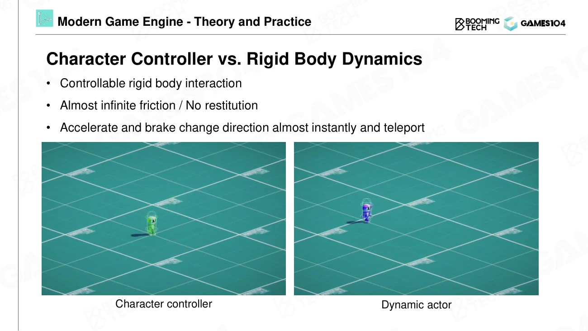
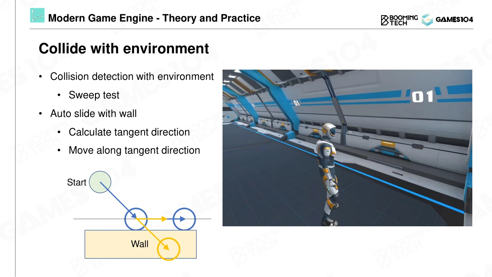
补充说明
课件还提到运行时改变控制器体积（如蹲下）前要做重叠测试，避免把角色插进物体里。
常见坑
角色在斜坡上抖动或滑不下去 → 坡度限制（Max Climb Slope）没设或法线判断有误 → 检查坡度阈值和地面法线。
角色卡在台阶边缘 → 台阶偏移（Step Offset）没开或太小 → 开启自动台阶并调整偏移量。
角色穿墙 → 直接设置位置而不是扫掠检测 → 改用 Sweep Test 并处理碰撞回调。
UE / Unity 落地
UE：
UCharacterMovementComponent内部就是运动学胶囊+扫掠检测，Max Step Height、Walkable Floor Angle、Max Slope对应课件里的台阶与坡度参数。Unity：
CharacterController组件提供Move()和isGrounded，底层也是扫掠+滑动，Slope Limit、Step Offset直接对应。
022. 角色控制器的细节：台阶、坡度、体积变化与推动物体
角色控制器要处理的不只是“往前走”，还有一堆边界情况：
- 自动台阶（Auto Stepping）：遇到矮台阶时，用“台阶偏移”做一次扫掠，把角色抬上去。但课件指出它有个问题——会留下虚拟间隙（Virtual Gap），角色看起来像浮在台阶上一点点。
- 坡度限制（Slope Limits）：设置最大可攀爬坡度；超过这个坡度，角色会强制滑下去（Force Sliding Down），否则玩家能爬上垂直墙。
- 体积更新（Controller Volume Update）：蹲下时改变胶囊尺寸，更新前要做重叠测试（Overlap Test），确认新体积不会和场景穿插。
- 推动物体（Push Objects）：角色撞到动态刚体时触发命中回调（Hit Callback），在回调里给刚体施加力。
- 站在移动平台上（Standing on Moving Platform）：角色需要继承平台的速度，否则平台一动角色就掉下去。
这些细节共同决定了“手感”。课件反复强调：角色控制器是大量经验参数的集合，不是纯物理推导出来的。
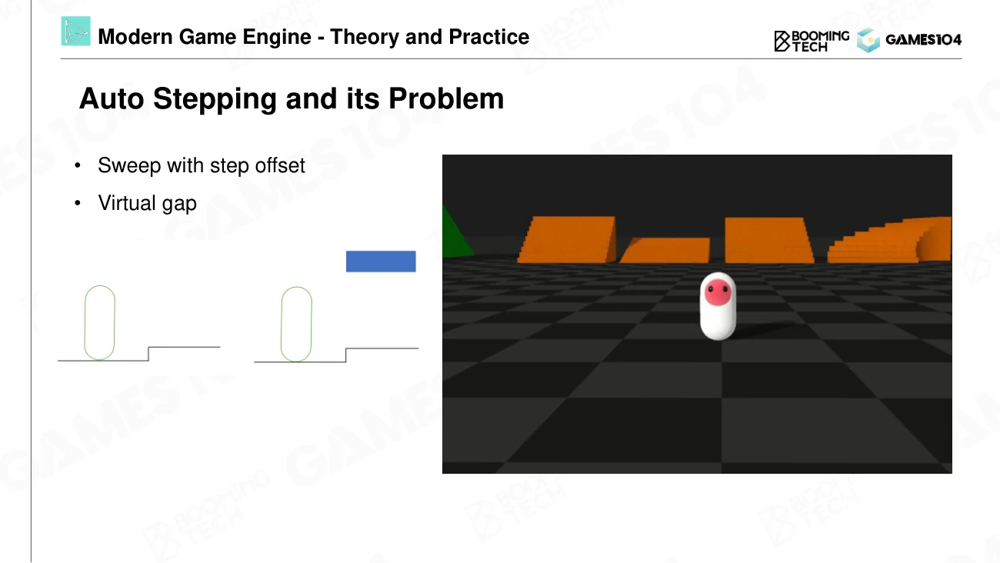
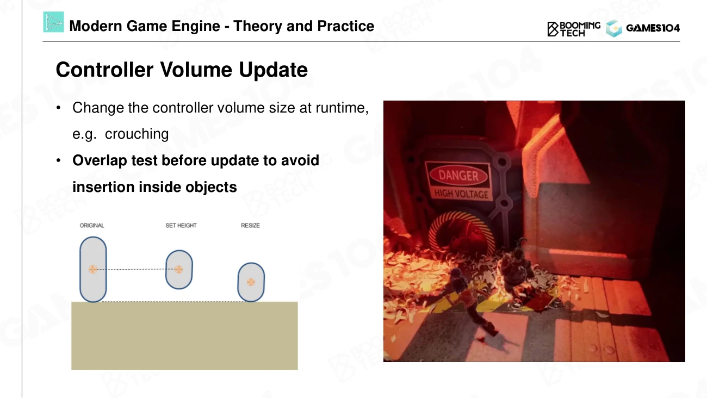
常见坑
蹲下后角色卡进地面 → 体积更新前没做重叠测试 → 先检测再改尺寸。
站在移动平台上角色被“甩下” → 没继承平台速度 → 在每帧把平台速度加到角色位移上。
角色推箱子推不动 → 没在命中回调里施加力 → 检查碰撞回调是否绑定并施力。
UE / Unity 落地
UE：
CharacterMovementComponent的Max Step Height、Walkable Floor Angle、Crouched Half Height分别对应台阶、坡度、蹲下体积。Unity：
CharacterController的stepOffset、slopeLimit、center/height对应上述参数；推动刚体需在OnControllerColliderHit里加力。
033. 布娃娃：把骨骼绑到刚体上
布娃娃（Ragdoll）用来表现角色死亡、被击飞等“失去控制”的状态。为什么需要它？课件给了两个场景：倒在地上、倒在悬崖边——纯动画很难表现这种和环境交互的随机姿势，而物理可以。
实现思路是把骨骼映射到刚体：给关键关节（头、胸、骨盆、四肢）各绑一个刚体，刚体之间用关节约束（Joint Constraints）连接。人体关节不是随便一个铰链就能代替的，课件列举了多种约束类型：
- 球窝关节（Ball-and-Socket）：肩、髋，三个旋转自由度。
- 铰链关节（Hinge）：肘、膝，一个旋转自由度。
- 枢轴关节（Pivot）：允许旋转但限制平移。
- 椭圆关节（Condyloid）、鞍状关节（Saddle）、滑动关节（Gliding）等。
课件特别强调：约束必须匹配人体解剖结构。如果所有关节都用自由铰链，结果会非常诡异（四肢反折）。另外，刚体要尽量贴合网格（fit the mesh），否则布娃娃看起来像一堆漂浮的方块。
布娃娃还需要和动画系统配合：每帧根据刚体姿态更新骨骼。绑定姿势（Bind Pose）是参考，中间关节由刚体驱动，叶子关节（Leaf Joints）跟随父关节。
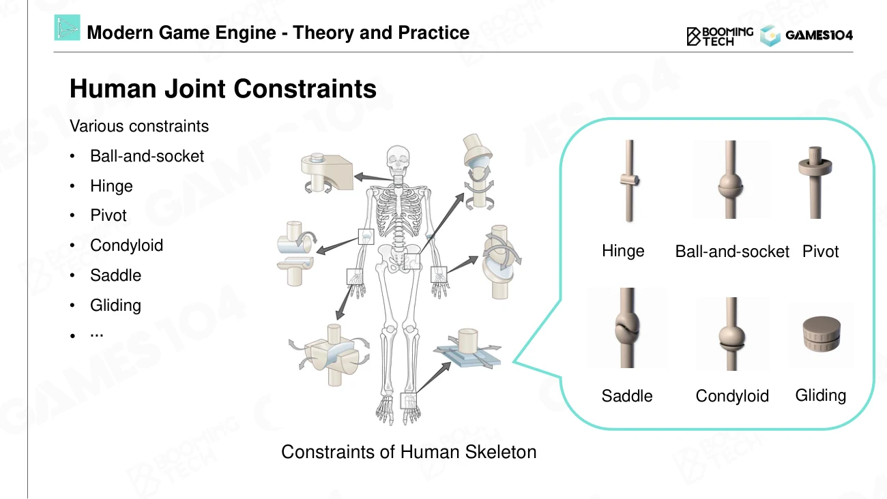
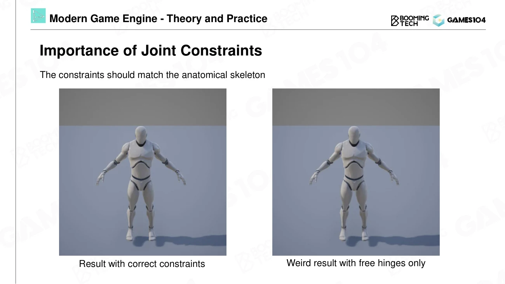
常见坑
布娃娃四肢反折 → 关节约束类型或角度限制不对 → 按解剖结构设置铰链/球窝及摆动范围。
布娃娃看起来像漂浮的方块 → 刚体没贴合网格 → 调整刚体尺寸和位置使其尽量包住网格。
布娃娃抖动或爆炸 → 刚体质量比过大或约束求解迭代不足 → 调整质量、增加求解迭代。
UE / Unity 落地
UE：
Physics Asset就是布娃娃的刚体+约束定义，可在 Persona 里编辑；Physics Blend Weight控制动画与物理混合。Unity：
Ragdoll向导自动生成刚体+CharacterJoint，ConfigurableJoint可精细控制角度限制。
044. 动画与布娃娃的混合
布娃娃不能一直“软”着，否则角色永远爬不起来。课件给出两种状态：
- 运动学状态（Kinematic State）：刚体由动画驱动，物理不参与。
- 动态状态（Dynamic State）：刚体由物理模拟驱动。
角色死亡时从运动学切到动态，复活时再切回来。更高级的做法是物理-动画混合（Physics-Animation Blending）：在动画姿势和物理姿势之间按权重插值。权重为 0 时纯动画，为 1 时纯布娃娃，中间就是“半软”状态。
课件还提到 Powered Ragdoll：用物理结果反过来驱动动画，让角色在受击后既有物理感又能保持动画的连贯性。这在 3A 游戏里很常见——角色被击中时上半身物理反应，下半身继续播放动画。
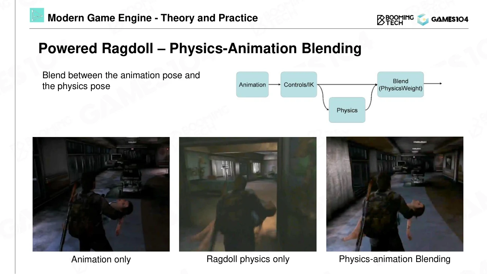
常见坑
角色死亡后瞬间“瘫软”不自然 → 没有混合过渡 → 用权重在几帧内从动画渐变到物理。
复活后角色姿势错乱 → 切回运动学状态时没重置刚体姿态 → 切换时把刚体对齐到当前动画姿势。
UE / Unity 落地
UE：动画蓝图的
Physics Blend Weight节点控制混合；Ragdoll状态可用Set Simulate Physics切换。Unity：用
Animator的IK或Rigidbody.isKinematic切换，混合需自己写权重插值。
055. 布料模拟：从动画到质点弹簧
布料（Cloth）在游戏里很常见：旗帜、披风、裙摆。课件给出三种实现路线，成本从低到高：
- 基于动画（Animation-based）：美术在 DCC 工具里做好布料动画，引擎直接播放。优点便宜、可控；缺点不交互、不随机。
- 基于刚体（Rigid Body-based）：把布料骨骼绑到刚体上，用约束连接，物理引擎求解。优点便宜、可交互；缺点不确定、可能穿模。
- 基于网格（Mesh-based）：直接对布料网格的顶点做物理模拟，效果最好也最贵。
网格模拟的关键是区分渲染网格（Render Mesh）和物理网格（Physical Mesh）：物理网格通常顶点更少，只用来模拟；渲染网格负责好看。两者之间做蒙皮/映射。
物理网格上，每个顶点是一个质点，顶点之间是弹簧。课件给出质点弹簧系统（Mass-Spring System）的受力：
- 弹簧力：\( F_s = k_{spring} \Delta x \)，\(\Delta x\) 是形变量。
- 弹簧阻尼力：\( F_D = -k_{damping} v \)，\(v\) 是相对速度。
- 对每个顶点做受力分析： \[ F_{net}^{vertex}(t) = Mg + F_{wind}(t) + F_{airresistance}(t) + \sum_{springs} (k_{spring}\Delta x(t) - k_{damping}v(t)) = M a(t) \]
然后积分求解。课件还提到位置约束：给每个顶点加最大半径约束（Paint Cloth Simulation Constraints），防止布料被拉飞。
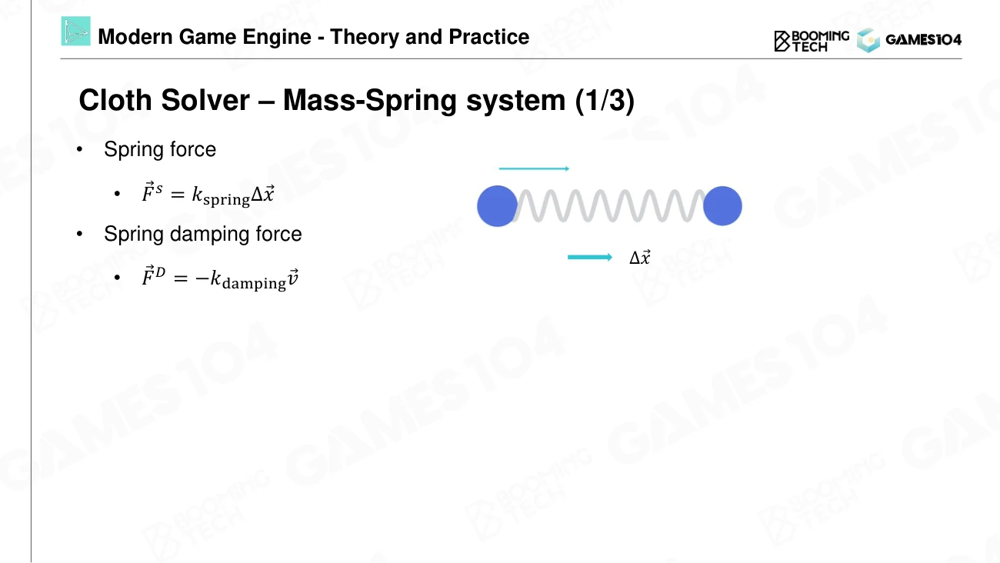
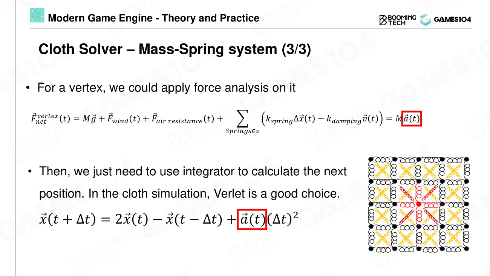
补充说明
课件还提到自碰撞（Self Collision）是难点，常见解法：加厚布料、增加子步、限制最大速度、引入接触/摩擦约束。
常见坑
布料爆炸（顶点飞走） → 弹簧刚度过大或时间步太大 → 减小刚度、增加子步或改用 PBD。
布料穿模 → 没有碰撞约束或物理网格太粗 → 加碰撞体、细化物理网格。
布料抖动 → 阻尼不足 → 增加阻尼系数。
UE / Unity 落地
UE：
Clothing资产基于 Chaos Cloth，可绘制最大距离约束、设置物理材质（摩擦力、阻尼）。Unity：
Cloth组件提供顶点级模拟，可设置Stretching Stiffness、Damping、Collision Sphere等。
066. 积分方法：从半隐式欧拉到 Verlet
布料模拟需要把受力变成位置。课件先回顾半隐式欧拉（Semi-Euler）： \[ v_{t+\Delta t} = v_t + a(t)\Delta t \] \[ x_{t+\Delta t} = x_t + v_{t+\Delta t}\Delta t \]
然后推导 Verlet 积分。把上式代入： \[ x_{t+\Delta t} = x_t + (v_t + a(t)\Delta t)\Delta t \] 又因为 \( x_t = x_{t-\Delta t} + v_t\Delta t \)，所以 \( v_t\Delta t = x_t - x_{t-\Delta t} \)，代入得： \[ x_{t+\Delta t} = x_t - x_{t-\Delta t} + a(t)\Delta t^2 \]
Verlet 积分不需要显式存储速度，只靠当前位置和上一帧位置就能推进，数值稳定性好，特别适合布料这种大量质点的系统。代价是速度需要额外估算（\( v \approx (x_t - x_{t-\Delta t})/\Delta t \)），且时间步必须固定。
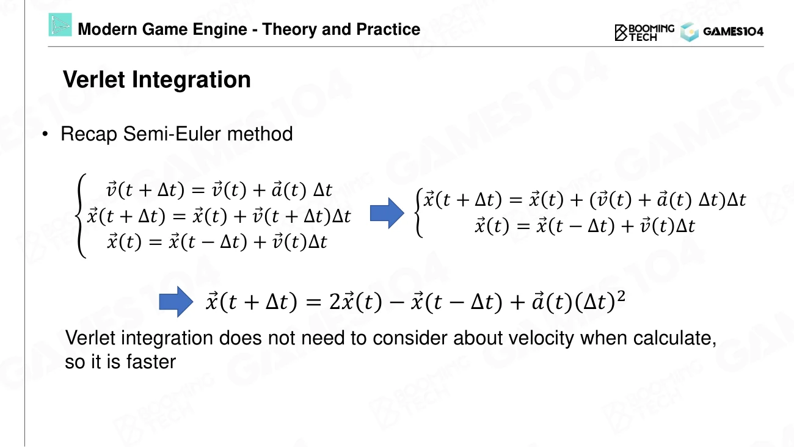
常见坑
Verlet 模拟结果和帧率相关 → 时间步不固定 → 固定物理步长（如 1/60 秒）。
速度估算不准导致阻尼异常 → 直接用位置差估算速度 → 可额外存储速度或使用 Velocity Verlet。
UE / Unity 落地
UE：Chaos Cloth 内部使用 PBD/XPBD 而非纯 Verlet，但思想类似——位置投影。
Unity：Cloth 组件底层也是基于位置的求解器。
077. 破坏系统：碎块、连通图与伤害传播
破坏（Destruction）不只是视觉效果，它能让游戏世界更生动，也是很多游戏的核心机制。课件给出的实现框架是：
- 碎块层级（Chunk Hierarchy）：把模型按层级切分，不同层级有不同的伤害阈值。比如大块需要更大伤害才碎，碎了之后变成更小的块。
- 连通图（Connectivity Graph）：在最深层为每个碎块建一个节点，如果两个碎块共享一个面，就连一条边。
- 连通值（Connectivity Value）：每条边上的数值，表示“需要多少伤害才能断开这条边”。每次受伤后更新，降到 0 就断开。
- 伤害计算：由冲击点的冲量 \(I\) 和材质硬度 \(H\) 计算冲击点伤害；然后按距离衰减分布到周围，有最小伤害半径 \(R_{min}\)、最大伤害半径 \(R_{max}\) 和衰减指数 \(k\)。
- 支撑图（Support Graph）：记录碎块是否还和世界连接。如果断开的碎块不再与主体相连，就应该整体掉落，而不是悬空。
碎块怎么生成？用 Voronoi 图：在模型包围盒内随机撒 N 个种子点，每个种子点的 Voronoi 细胞就是一块碎块；把细胞和原模型求交，得到碎块网格。3D 情况下还要为断裂面生成新三角形（通常用 Delaunay 三角剖分），并生成新的纹理坐标。不同的种子分布能得到均匀、簇状、放射状等不同破碎图案。
破坏发生在碰撞之后：碰撞检测到足够大的冲量，才触发破坏，生成新的刚体。
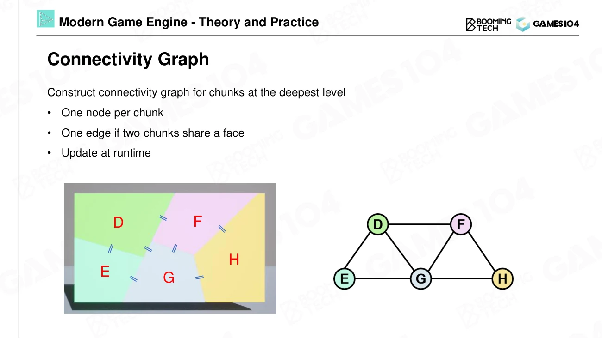
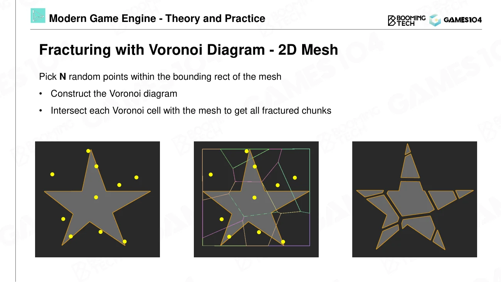
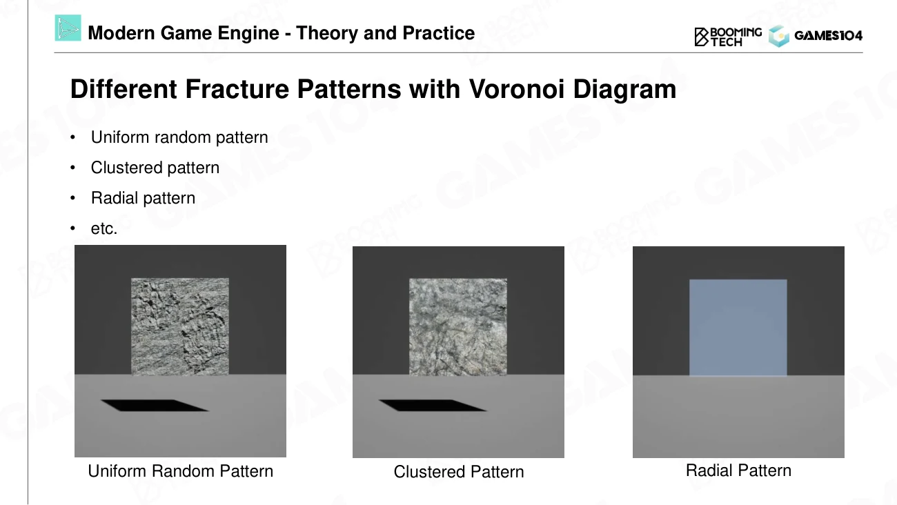
补充说明
课件提醒：破坏要谨慎使用，碎块过多会带来性能开销，参数很多需要美术调。
常见坑
碎块悬空不掉 → 没有支撑图判断 → 断开后检查是否与主体连通，不连通则整体转为动态刚体。
破碎后性能骤降 → 碎块太多、刚体太多 → 限制碎块数量、远处碎块休眠或合并。
断裂面没有纹理 → 3D 切割没生成新 UV → 为断裂面生成新三角形和纹理坐标。
UE / Unity 落地
UE：Chaos Destruction（Geometry Collection）支持 Voronoi 切割、连通图、伤害传播；早期 UE4 用 NVIDIA APEX。
Unity：可用 NVIDIA Blast（已弃用）或第三方插件；Havok Destruction 也支持 Unity。
088. 载具：四个力与重心
载具（Vehicle）模拟从风格化到真实有一整个光谱。课件给出的机制建模是：一个刚体作为车身，轮子用形状表示，悬挂用场景查询模拟。核心是四个力：
- 牵引力（Traction Force）：由引擎扭矩经齿轮和差速器传到车轮，\( T = T_{engine} \times g \times d \)，再除以轮半径得到牵引力 \( F_{traction} = T / R_w \)。
- 悬挂力（Suspension Force）：每个轮子独立计算，\( F_{suspension} = k(L_{rest} - (L_{hit} - R_w)) \)，\(k\) 是弹簧刚度，\(L_{rest}\) 是自然长度，\(L_{hit}\) 是命中距离，\(R_w\) 是轮半径。
- 纵向力（Longitudinal Force）：\( F_{long} = F_{traction} + F_{drag} + F_{rr} \)，包括牵引力、空气阻力和滚动阻力。
- 侧向力（Lateral Force）：\( F_{lateral} = C_c \times \alpha \)，\(C_c\) 是侧偏刚度，\(\alpha\) 是侧偏角。
重心（Center of Mass） 是载具手感的关键，它影响：
- 加速和牵引（重量转移）：\( F_f = \frac{L_r}{L}Mg \mp \frac{H}{L}Ma \)，\( F_r = \frac{L_f}{L}Mg \pm \frac{H}{L}Ma \)，最大牵引力 \( F_{traction} = \mu F_{suspension} \)。
- 空中稳定性：前重会“点头”，后重会稳定。
- 转向特性：前重导致转向不足（understeer），后重导致转向过度（oversteer）。
转向角（Steering Angles）：如果左右轮用相同转角，内侧轮会打滑。阿克曼转向（Ackermann Steering） 让左右轮转角不同：\( \alpha_l = \tan^{-1}(L_{wb} / (R_t + L_r)) \)，\( \alpha_r = \tan^{-1}(L_{wb} / (R_t - L_r)) \)。
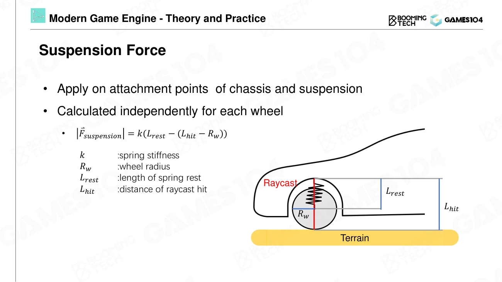
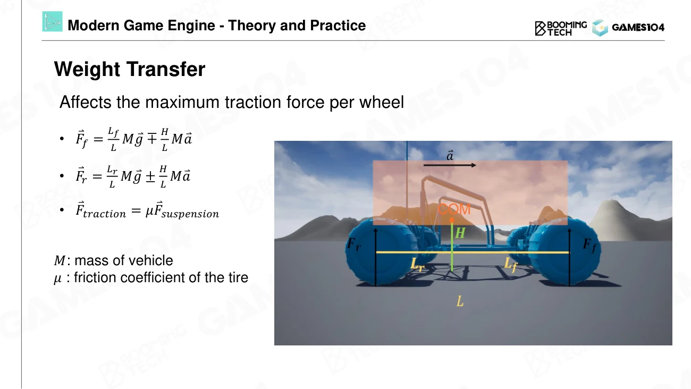
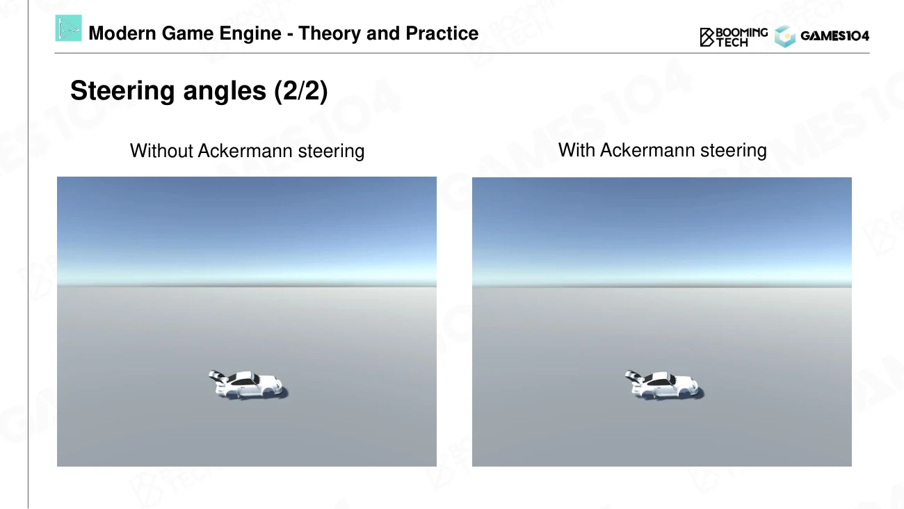
补充说明
课件还提到高级轮子接触（Advanced Wheel Contact）和更复杂的轮胎模型，但本讲只给到基础四力模型。
常见坑
车辆转向过度打转 → 重心太靠后 → 把重心前移或调整重量转移。
车辆加速时抬头过度 → 重心太高或后重 → 降低重心、调整悬挂。
低速转弯内侧轮打滑 → 没用阿克曼转向 → 按公式设置左右轮不同转角。
UE / Unity 落地
UE：
Chaos Vehicles或PhysX Vehicles，可设置重心偏移、悬挂、轮胎参数。Unity：
WheelCollider提供悬挂和轮胎摩擦，Rigidbody.centerOfMass可调重心。
099. PBD 与 XPBD：基于位置的求解
前面布料和破坏都提到 PBD。基于位置的动力学（Position Based Dynamics, PBD） 的核心思想是：不直接解力，而是把约束直接投影到位置上。
课件先回顾约束求解：用拉格朗日力学建模约束，比如碰撞约束（非穿透、摩擦、恢复系数）、布料约束（拉伸、弯曲）。约束函数 \( C(\mathbf{x}) = 0 \) 表示满足约束。对位置约束求导得到速度约束 \( \mathbf{J}\mathbf{v} = 0 \)，\(\mathbf{J}\) 是雅可比矩阵。
PBD 的投影步骤：假设当前积分后的位置是 \( \mathbf{X}^{k'} \)，要找一个修正量 \( \Delta \mathbf{X} \) 使约束满足： \[ C(\mathbf{X}^{k'} + \Delta \mathbf{X}) \approx C(\mathbf{X}^{k'}) + \nabla_{\mathbf{X}} C(\mathbf{X}^{k'}) \cdot \Delta \mathbf{X} = 0 \] 令 \( \Delta \mathbf{X} = \lambda \nabla_{\mathbf{X}} C(\mathbf{X}^{k'}) \)，代入可解出： \[ \lambda = -\frac{C(\mathbf{X}^{k'})}{\|\nabla_{\mathbf{X}} C(\mathbf{X}^{k'})\|^2} \]
PBD 的完整流程：
- 时间步开始。
- 半隐式积分（速度、位置）。
- 为碰撞生成约束（结构约束在初始化时生成）。
- 求解器迭代：反复投影约束。
- 迭代结束后更新状态（速度由位置差反推）。
- 碰撞顶点的速度按摩擦和恢复系数修正。
PBD 的优点是快速、稳定；缺点是约束满足度难控制，碰撞约束不能优先于其他约束。XPBD（Extended PBD） 用柔度（compliance，刚度的倒数）处理无限刚度约束（刚体），并重新引入刚体朝向。
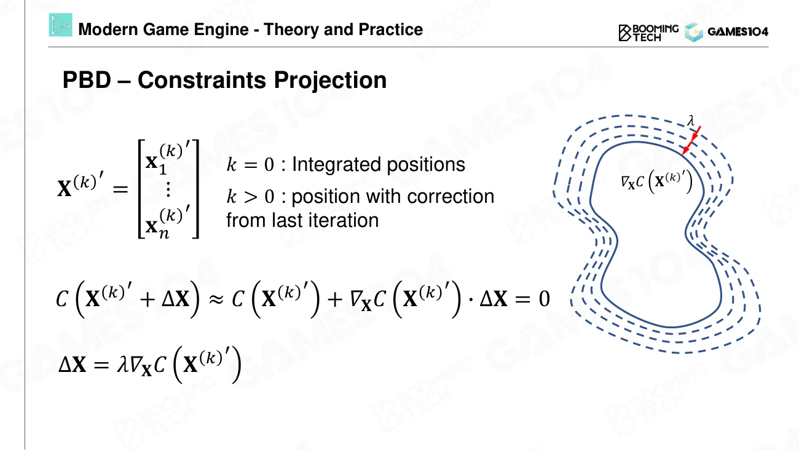
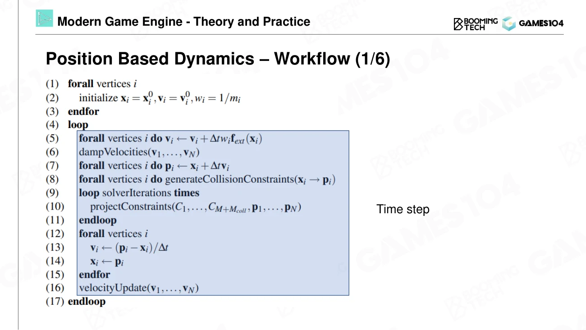
补充说明
课件最后留了作业：实现动画系统的姿势混合、简单 ASM、基于物理的角色控制器等。
常见坑
PBD 模拟很硬但抖动 → 迭代次数不够 → 增加求解器迭代。
XPBD 刚体旋转异常 → 没引入朝向 → 使用 XPBD 的刚体扩展。
约束满足度不可控 → PBD 本身缺陷 → 改用 XPBD 或调整柔度。
UE / Unity 落地
UE：Chaos Physics 的布料和破坏都基于 PBD/XPBD 思想。
Unity：
Cloth和部分 DOTS Physics 约束求解也采用基于位置的方法。
引擎对照表
| 概念 / 效果 | Unreal Engine | Unity |
|---|---|---|
角色控制器 |
|
|
布娃娃 |
|
|
布料 | Chaos Cloth |
|
破坏 | Chaos Destruction（Geometry Collection） | NVIDIA Blast / Havok Destruction 插件 |
载具 | Chaos Vehicles / PhysX Vehicles |
|
PBD/XPBD | Chaos Physics 内部求解器 | DOTS Physics / Cloth 内部 |
术语双语表
| English | 中文 | 说明 |
|---|---|---|
| Character Controller | 角色控制器 | 用运动学刚体+扫掠检测实现的可控角色移动组件。 |
| Kinematic Actor | 运动学刚体 | 不受物理规则驱动、但能推开其他物体的刚体。 |
| Sweep Test | 扫掠检测 | 沿移动方向扫掠形状，检测是否撞到环境。 |
| Ragdoll | 布娃娃 | 把骨骼绑到刚体上、用关节约束连接的物理模拟。 |
| Mass-Spring System | 质点弹簧系统 | 布料模拟的基础模型，顶点是质点，边是弹簧。 |
| Verlet Integration | Verlet 积分 | 只用位置递推、不需显式存速度的积分方法。 |
| Voronoi Diagram | Voronoi 图 | 把平面/空间按最近种子点划分成细胞，用于生成碎块。 |
| Connectivity Graph | 连通图 | 碎块之间的连接关系图，边上记录断开所需伤害。 |
| PBD | 基于位置的动力学 | 把约束直接投影到位置上的求解方法。 |
| Ackermann Steering | 阿克曼转向 | 让左右轮转角不同，避免低速转弯打滑。 |
课后练习
01 为什么角色控制器通常用运动学刚体而不是普通刚体？请至少说出两个原因。
查看答案
提示：
从手感、可控性、物理规则角度想。
1）玩家需要“指哪走哪”的手感，普通刚体有惯性和弹性，会被撞飞；2）角色需要几乎无限摩擦、无弹性、能瞬间转向/刹车，这些都不符合真实物理；3）运动学刚体不受物理规则驱动，但能推开其他物体，正好满足需求。
02 写出质点弹簧系统中单个顶点的受力方程，并说明 Verlet 积分的递推公式。
查看答案
提示：
受力包括重力、风力、空气阻力、弹簧力、阻尼力。
受力：\( F_{net} = Mg + F_{wind} + F_{airresistance} + \sum_{springs}(k_{spring}\Delta x - k_{damping}v) = Ma \)。Verlet 递推：\( x_{t+\Delta t} = x_t - x_{t-\Delta t} + a(t)\Delta t^2 \)。
03 简述用 Voronoi 图生成 3D 碎块的流程，并说明连通图和支撑图分别起什么作用。
查看答案
提示：
种子点、细胞、求交、断裂面三角形。
流程：在包围盒内随机撒 N 个种子点，构建 Voronoi 图，每个细胞与原模型求交得到碎块；3D 下为断裂面用 Delaunay 三角剖分生成新三角形并生成纹理坐标。连通图记录碎块之间是否共享面以及断开所需伤害；支撑图记录碎块是否还与世界连接，不连通的碎块整体掉落。
04 载具模拟中，重心位置如何影响转向特性？前重和后重分别导致什么？
查看答案
提示：
转向不足 vs 转向过度。
前重导致转向不足（understeer），后重导致转向过度（oversteer）。重心还影响加速时的重量转移和空中姿态（前重点头、后重稳定）。
05 PBD 的约束投影公式是什么？它相比传统力求解有什么优缺点？
查看答案
提示：
一阶泰勒展开，修正量 \( \Delta X = \lambda \nabla C \)。
投影：\( C(X + \Delta X) \approx C(X) + \nabla C \cdot \Delta X = 0 \)，令 \( \Delta X = \lambda \nabla C \)，得 \( \lambda = -C(X)/\|\nabla C\|^2 \)。优点：快速、稳定；缺点：约束满足度难控制，碰撞约束不能优先于其他约束。